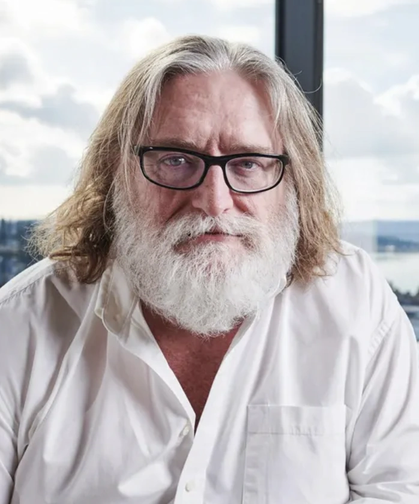

About Gabe Newell
Gabe Newell is an American businessman and the co-founder of Valve Corporation. He was born on November 3, 1962 in Seattle, Washington. Before starting Valve, he worked at Microsoft for 13 years. He is known for creating Steam, the biggest PC gaming platform in the world. Gamers often call him "GabeN".
Important Events
- 1962 — Born in Seattle, Washington
- 1983 — Dropped out of Harvard to work at Microsoft
- 1996 — Co-founded Valve Corporation with Mike Harrington
- 1998 — Released Half-Life
- 2003 — Launched Steam platform
- 2007 — Released Portal and Team Fortress 2
Key Contributions
- Co-founded Valve Corporation
- Created Steam — largest PC gaming platform
- Half-Life game series
- Steam Deck handheld console
Learn More
Read about him on Wikipedia
Visit Valve official website
Learn more